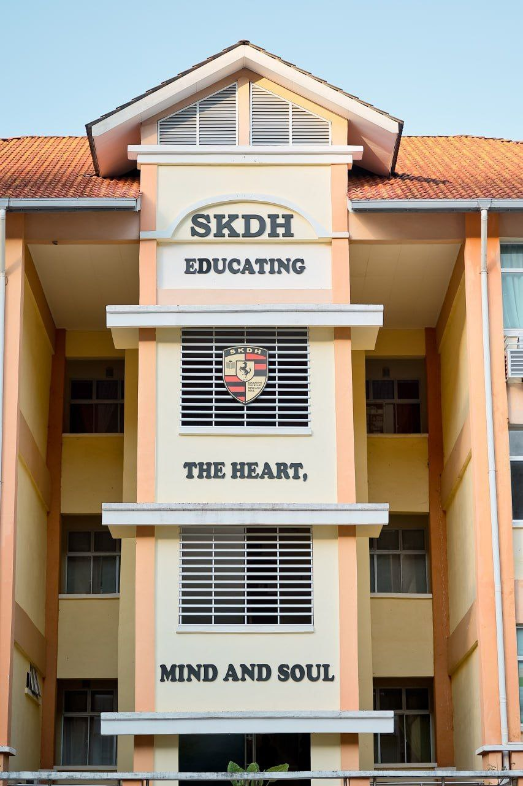
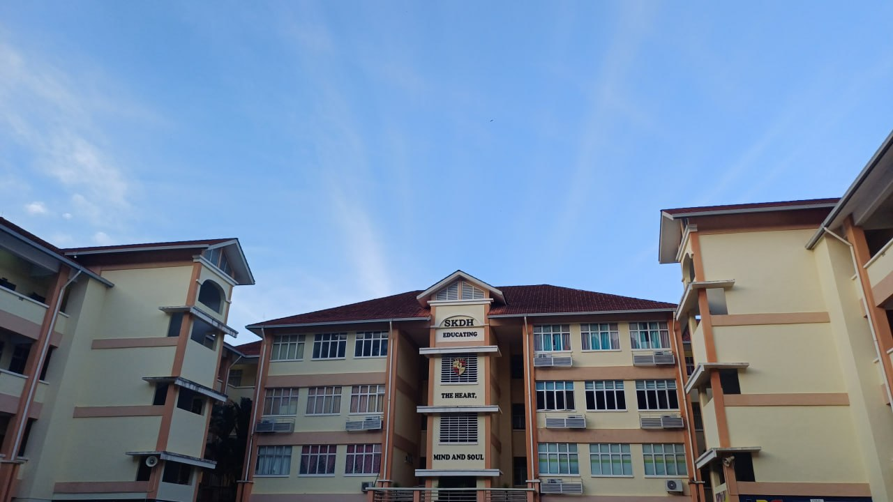
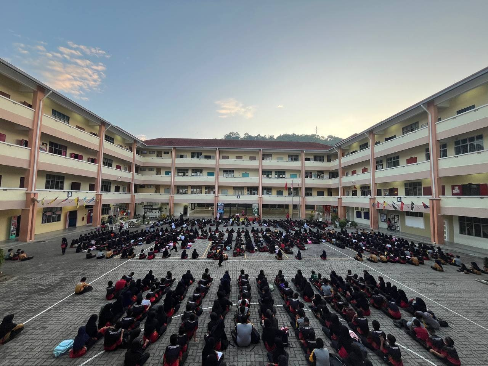
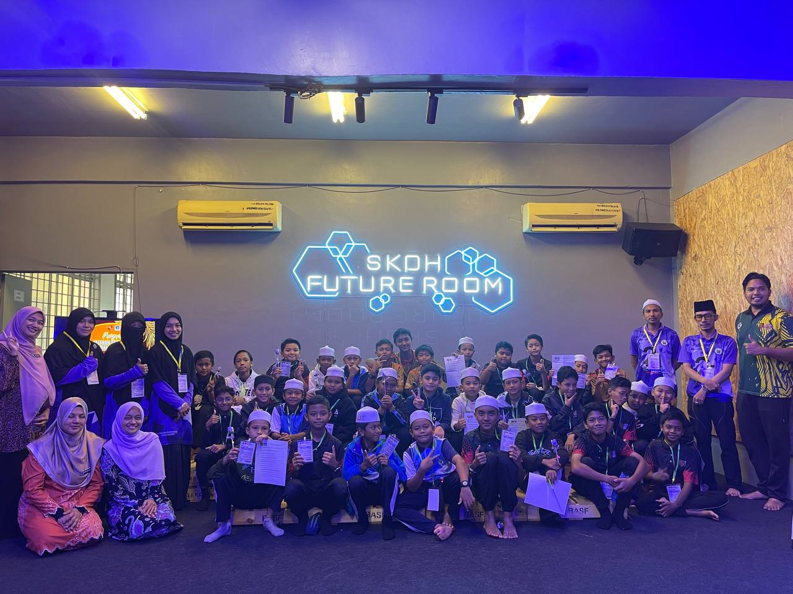
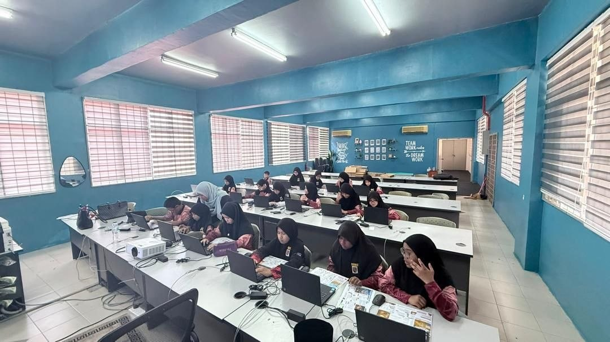
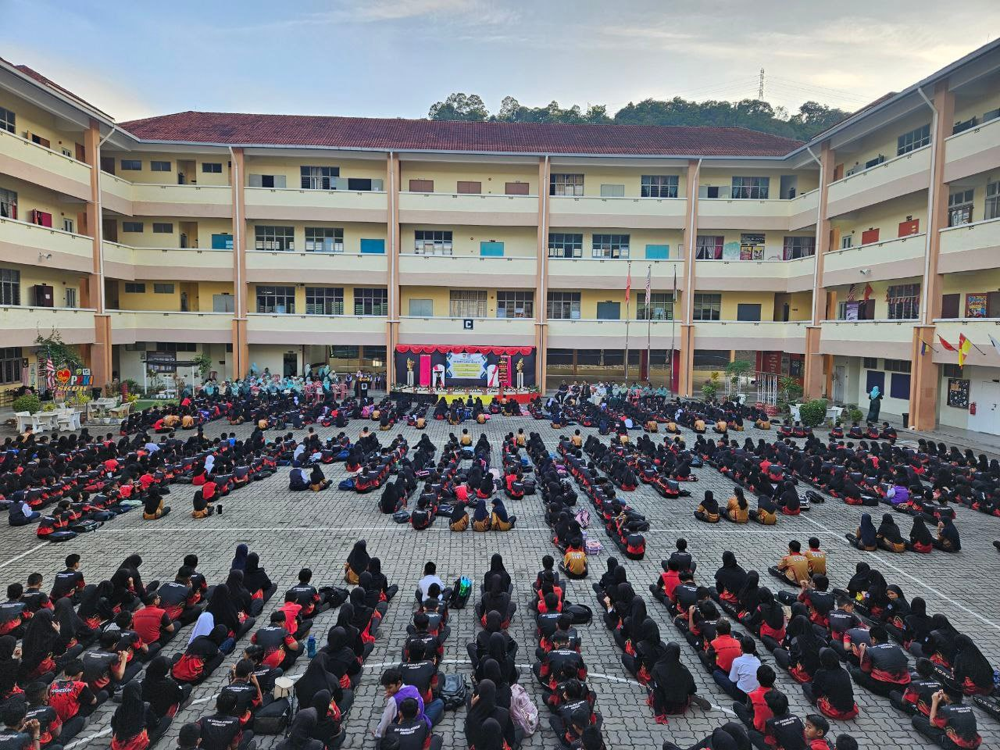
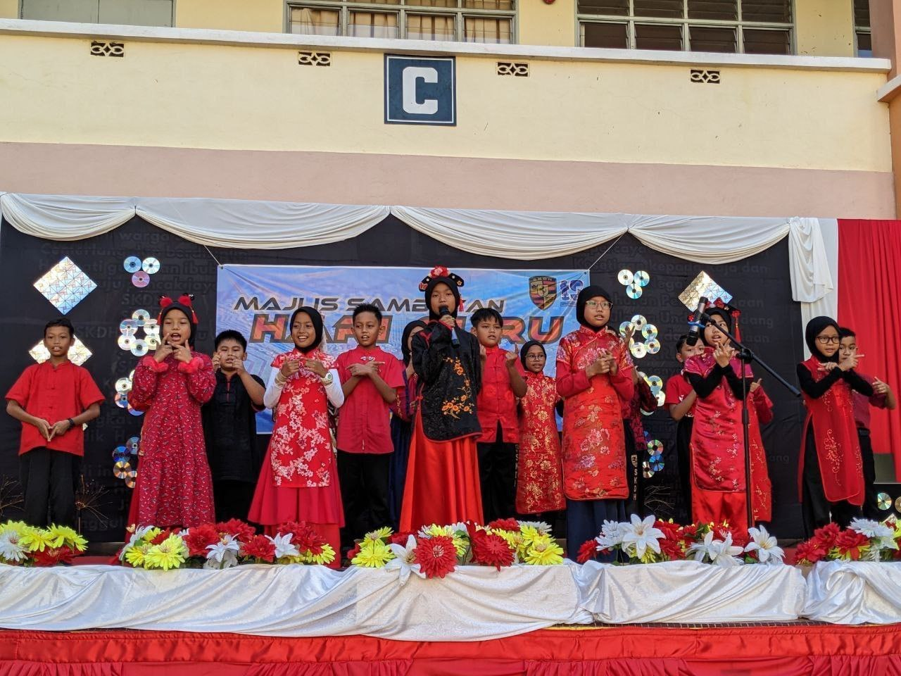
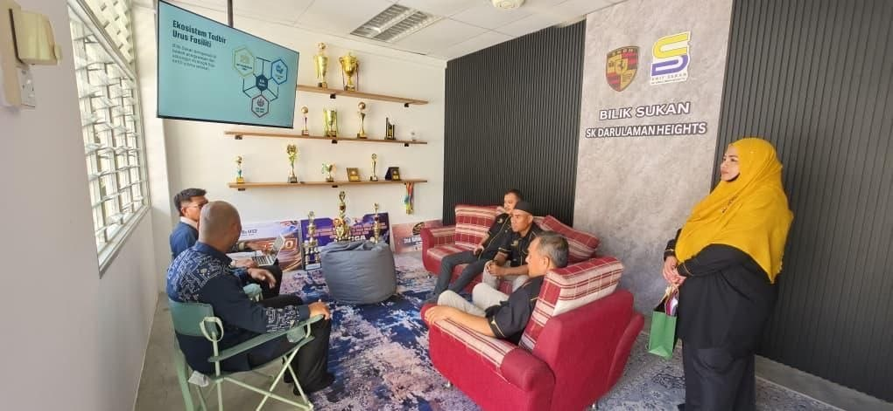
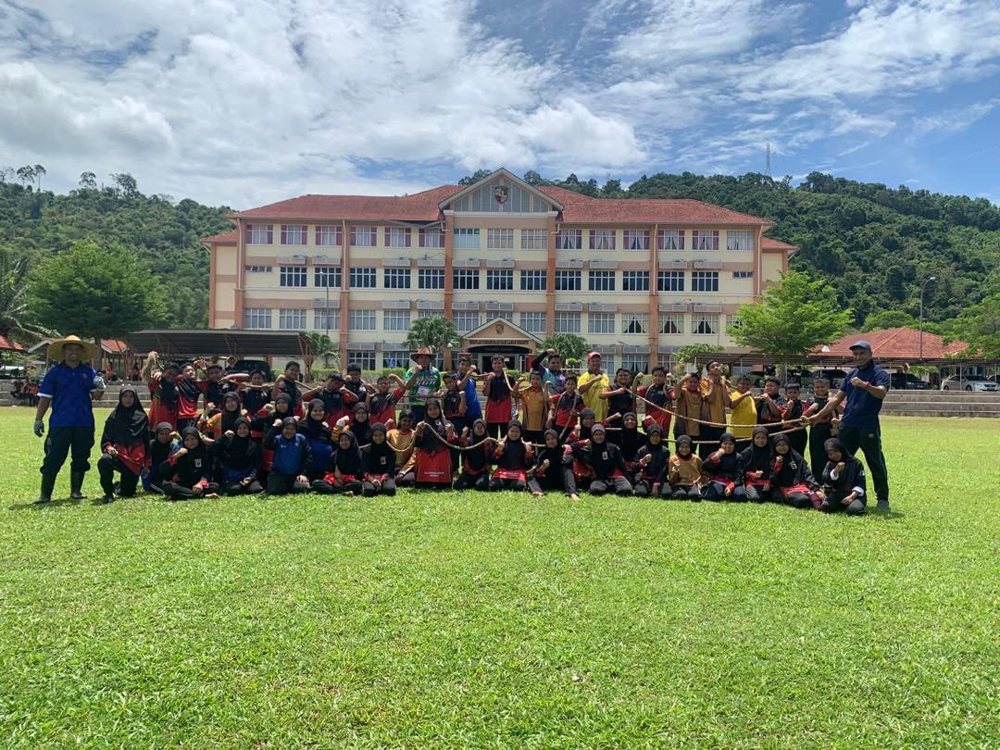
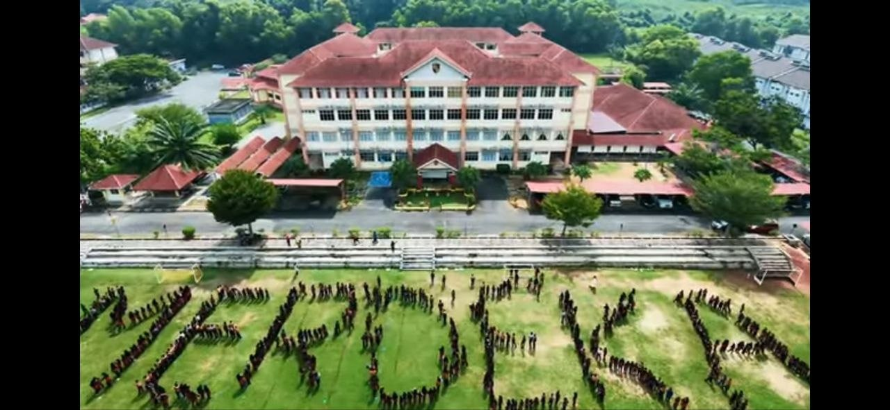

Welcome to our school
One School.
One Digital
Gateway.
A connected space for the SK Darulaman Heights community — bringing school information, learning resources and digital services together.
KBA4065“Educating the heart, mind, and soul.”




SKDH · EST. 2011
A place to learn, grow and belong.
Your school, connectedExplore the portal ↓
Find your destination
Explore the Portal
One school community. Twelve destinations. Everything connected.
01 / School leadership
Governance & school life
Leading with purpose.
Information, academic direction and the programmes that shape everyday school life.

02 / Learning communityLearning & discovery
Every learner matters.
Spaces and resources that support every child to explore, participate and thrive.

03 / Our communityConnect & celebrate
Stronger together.
Follow school stories, celebrate achievements and stay connected with our wider community.
Moments that make us
The SKDH Story
A glimpse of the people, places and experiences that make our school community special.




Educating the heart, mind and soul
One community. Endless possibilities.
Welcome to the official digital gateway of SK Darulaman Heights.
BACK TO TOP ↑